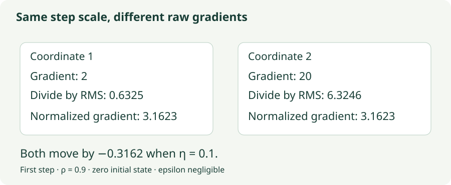

RMSprop: Adapting to Recent Gradients
Understand squared-gradient memory, epsilon, and the difference between normalization and curvature.
If one coordinate’s gradient is consistently a hundred times larger than another’s, a shared learning rate can make the first coordinate dominate. RMSprop keeps a recent magnitude estimate for each coordinate and divides by it. To understand the method, focus on what that estimate remembers, how quickly it forgets, and what it cannot tell you about curvature.
1. Normalize by a recent RMS
Let $g_t$ be the mini-batch gradient at $w_{t-1}$. Basic, uncentered RMSprop without momentum stores one vector $v$, initialized at zero:
All operations are element-wise. The denominator is a root-mean-square-like gradient estimate. Here epsilon is outside the square root, matching the PyTorch convention used in this chapter. Some formulations place it inside. Those choices are not numerically interchangeable.
Define the effective coordinate rate $a_{t,j}=\eta/(\sqrt{v_{t,j}}+\epsilon)$. RMSprop is then $w_{t,j}=w_{t-1,j}-a_{t,j}g_{t,j}$. A large recent squared gradient makes $a_{t,j}$ smaller. A small one makes it larger. This scales the current gradient; basic RMSprop does not accumulate a signed direction as momentum does.
2. A large gradient need not produce a large step
Start with $v_0=(0,0)$ and gradient $g_1=(2,20)$. Use $\rho=0.9$, $\eta=0.1$, and negligible epsilon. Then
The normalized gradients are approximately $(3.1623,3.1623)$, so both displacements are about $-0.3162$. The raw derivatives differed by a factor of ten; the recent magnitude estimates differed by the same factor.

Why is the first normalized magnitude greater than one? Only a fraction $1-\rho$ of the first squared gradient has entered the zero-initialized buffer. For a constant nonzero gradient $g$,
The denominator starts below $|g|$ and approaches it. Ignoring epsilon, the update magnitude starts near $\eta/\sqrt{1-\rho}$ and eventually approaches $\eta$. Basic RMSprop does not apply Adam’s explicit bias correction.
3. A moving average measures magnitude, not variance
Unrolling the state gives $v_t=(1-\rho)\sum_{k=1}^t\rho^{t-k}g_k^2$. Every contribution is nonnegative. Opposite signs do not cancel: a gradient sequence $+1,-1,+1,-1$ has the same squared-gradient history as $+1,+1,+1,+1$.
A variance would measure squared deviations from a mean. Here $v$ estimates an uncentered second moment. For a stationary scalar random gradient, $\mathbb E[g^2]=\operatorname{Var}(g)+(\mathbb E[g])^2$. A large denominator can reflect high noise, a large persistent mean gradient, or both. Calling it simply “gradient variance” hides that distinction.
The decay controls how long a past event matters. After a spike, its contribution is multiplied by $\rho$ on each subsequent step. Its half-life is $\log(1/2)/\log\rho$: about 6.6 steps for $\rho=0.9$ and 69 steps for $0.99$. Longer memory makes the denominator steadier but slower to recover.
4. Lab: a single spike leaves a trace
This experiment supplies gradients rather than training a model, so changes in the optimizer’s memory are easy to isolate. In the spike scenario, $g_t=1$ except for $g_{11}=10$. The learning rate stays at 0.1 and epsilon at $10^{-8}$. The plot compares gradient magnitude with running RMS; the text preserves the gradient’s sign.
RMSprop memory microscope
Step through the spike, or calculate the entire 40-step sequence. Change the decay to rerun it.
- Inspect steps 10–12: the spike both increases the numerator and immediately increases the denominator. On the next step, the gradient returns to 1 but the denominator is still elevated.
- Increase decay to 0.99: observe slower forgetting and stronger zero-initialization effects. Do not assume a bigger decay simply makes every step smaller.
- Select sign reversal: the RMS curve is unchanged from a constant-magnitude sequence, but the update immediately reverses. There is no signed momentum in this experiment.
5. Why normalization is not Newton’s method
For a quadratic $L(w)=\tfrac12w^\top Hw$, the Hessian $H$ is constant even as gradients change with $w$. RMSprop’s diagonal scale depends on gradient history and therefore on the path taken. It is not generally $H^{-1}$, nor does it estimate all of $H$.
Consider a rotated narrow valley. Changing the scale of each coordinate stretches or compresses the horizontal and vertical axes. A full preconditioner can also mix coordinates, aligning its action with a diagonal valley. RMSprop’s basic diagonal denominator cannot express that general rotation. Later, Shampoo and SOAP will make row and column coupling explicit.
Scaling every gradient by a positive constant can approximately cancel between numerator and denominator after the histories scale accordingly and epsilon is negligible. That is useful robustness to magnitude, not invariance to arbitrary changes of parameter coordinates or to changing the loss scale halfway through training.
6. Centered RMSprop and momentum are additional choices
A centered version also tracks a mean $q_t=\rho q_{t-1}+(1-\rho)g_t$ and uses a denominator based on $\sqrt{v_t-q_t^2}+\epsilon$. It is closer to a running variance estimate, although initialization and finite precision still matter. For nearly constant gradients this denominator can become small; centering changes the algorithm, not just its name.
Another option applies momentum to the normalized gradient. In that version, the signed buffer remembers already-rescaled gradients from earlier steps. This is different from dividing a raw-gradient momentum buffer by today’s RMS. The order of filtering and normalization matters because the denominator changes over time.
# Basic uncentered RMSprop; no momentum.
v = rho * v + (1 - rho) * grad.square()
parameter -= lr * grad / (v.sqrt() + eps)
optimizer = torch.optim.RMSprop(
model.parameters(), lr=0.01, alpha=0.99,
eps=1e-8, momentum=0, centered=False, weight_decay=0
)PyTorch calls the decay alpha; these notes call it $\rho$ to avoid confusing it with other algorithms’ coefficients. This explicit configuration is an example of the implementation convention, not a claim that these hyperparameters suit every task.
7. Questions worth answering
Yes. The global rate still matters, and a small denominator can amplify a gradient. At initialization, a large decay creates a particularly small second-moment estimate. Inspect the actual displacement rather than assuming normalization bounds it by the learning rate.
The second-moment buffer decays toward zero. The parameter does not move while its gradient is zero in basic RMSprop. A later nonzero gradient enters both the numerator and the refreshed denominator.
RMSprop supplies a global learning rate after gradient normalization. Adadelta additionally uses a coordinate’s previous RMS update as a numerator scale. They share a gradient-magnitude history but do not have the same update rule.
Sources
Hinton’s lecture 6 slides, including Tieleman’s RMSprop proposal; PyTorch RMSprop implementation conventions. The coordinate calculations and supplied gradient sequences are original teaching examples.